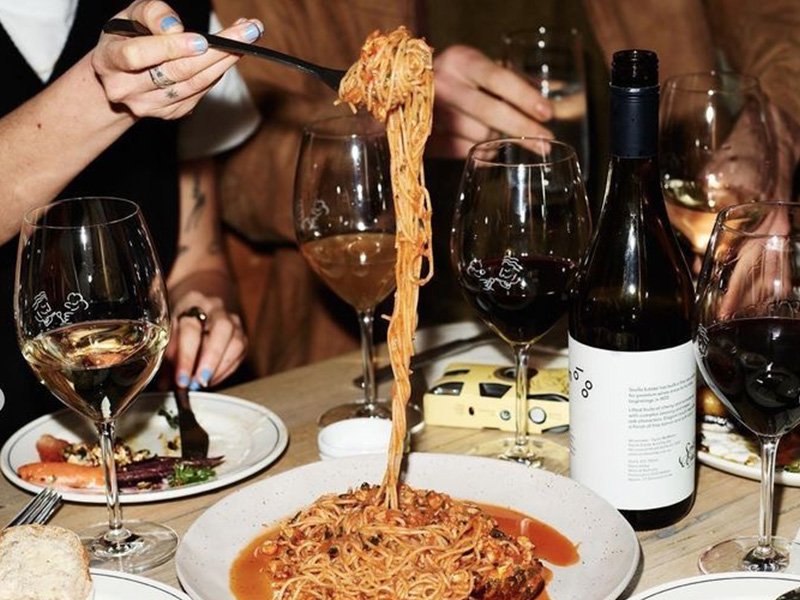
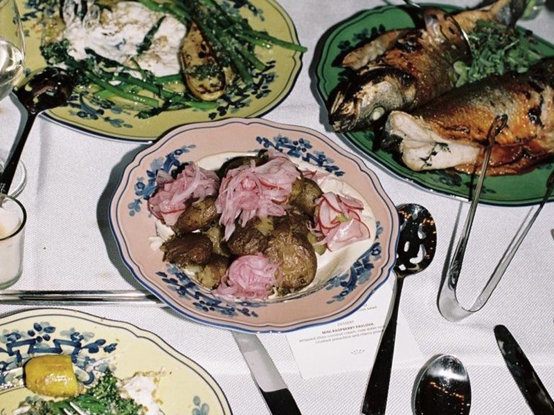
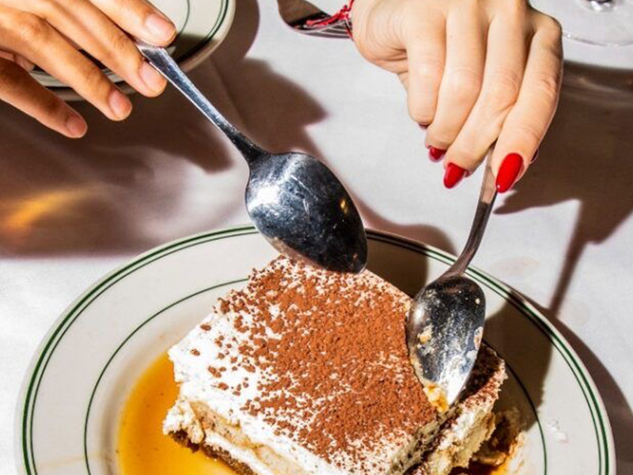

Menu
Antipasti (Appetizers)
-
Bruschetta al Pomodoro
Crispy toasted bread topped with fresh tomatoes, basil, garlic, and extra virgin olive oil.
$10.00
-
Carpaccio di Manzo
Thinly sliced raw beef drizzled with lemon juice, arugula, shaved Parmesan, and capers.
$16.00
-
Frittura di Calamari
Lightly battered and fried calamari served with a zesty lemon aioli.
$14.00
-
Arancini Siciliani
Golden-fried risotto balls stuffed with mozzarella, peas, and a rich meat ragù.
$12.00
-
Burrata e Prosciutto
Creamy burrata cheese paired with thinly sliced prosciutto and balsamic glaze.
$18.00
-
Zuppa di Cozze
Fresh mussels simmered in white wine, garlic, and cherry tomatoes, served with crusty bread.
$16.00
Pasta e Risotti
-
Tagliatelle al Tartufo Nero
Handmade tagliatelle pasta tossed in a luxurious black truffle cream sauce.
$24.00
-
Spaghetti Carbonara
Classic Roman pasta with guanciale, egg yolk, Pecorino Romano, and black pepper.
$22.00
-
Linguine ai Frutti di Mare
A seafood lover’s delight with shrimp, mussels, and calamari in a white wine tomato sauce.
$26.00
-
Penne all’Arrabbiata
Spicy tomato sauce with garlic, red pepper flakes, and fresh parsley.
$18.00
-
Risotto ai Funghi Porcini
Creamy risotto infused with porcini mushrooms, white wine, and Parmesan cheese.
$23.00
-
Ravioli di Ricotta e Spinaci
Homemade ravioli stuffed with ricotta and spinach, served in a light sage butter sauce
$20.00
Secondi (Main Courses)
-
Branzino al Limone e Erbe
Mediterranean sea bass grilled to perfection with lemon, rosemary, and olive oil.
$30.00
-
Ossobuco alla Milanese
Slow-braised veal shank served with saffron-infused risotto.
$36.00
-
Pollo al Marsala
Tender chicken breast simmered in a rich Marsala wine and mushroom sauce.
$24.00
-
Filetto di Manzo al Pepe Verde
Grilled beef tenderloin with a creamy green peppercorn sauce.
$42.00
-
Saltimbocca alla Romana
Thinly pounded veal wrapped in prosciutto and sage, cooked in a white wine sauce.
$28.00
-
Melanzane alla Parmigiana
Layered eggplant baked with tomato sauce, mozzarella, and Parmesan.
$22.00
Dolci (Desserts)
-
Tiramisù Classico
Traditional Italian dessert with layers of espresso-soaked ladyfingers and mascarpone cream.
$10.00
-
Panna Cotta alla Vaniglia
Silky smooth vanilla panna cotta topped with a berry coulis.
$9.00
-
Cannoli Siciliani1
Crisp pastry shells filled with sweet ricotta, chocolate chips, and candied orange.
$10.00
-
Torta Caprese
Flourless chocolate and almond cake, rich and decadent with a hint of orange zest.
$11.00
-
Gelato Artigianale
A selection of handcrafted gelato flavors made with fresh ingredients.
$8.00
-
Affogato al Caffè
A scoop of vanilla gelato drowned in a shot of hot espresso.
$9.00